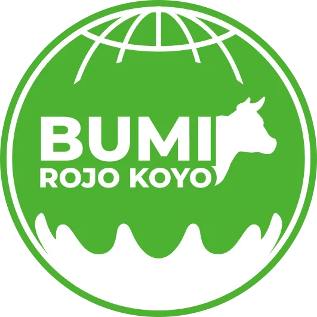

Dairy Farm Feeding System
Pilih minimal satu pen di atas untuk memuat target pakan.
Memuat data...
PDF berisi kolom kosong "Stock Fisik" untuk dicek dan diisi helper.
Akurasi timbangan aktual terhadap target formula